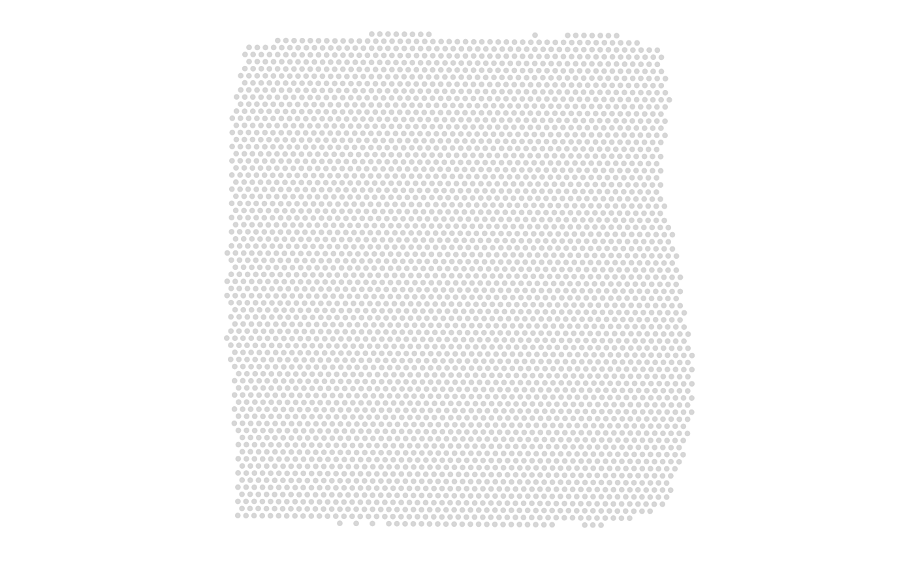
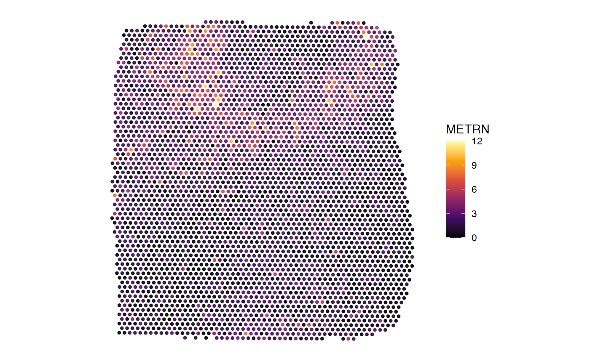
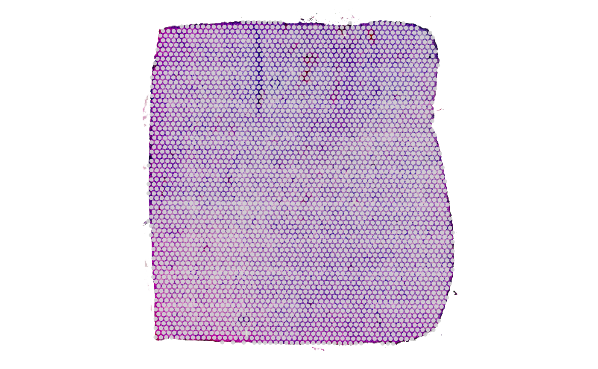
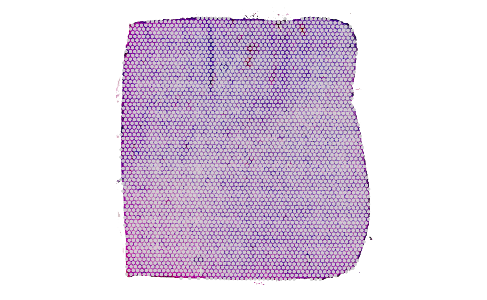
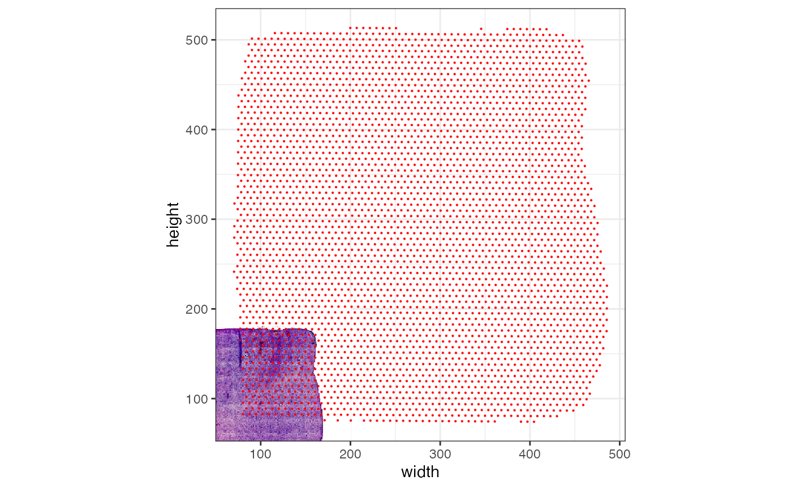
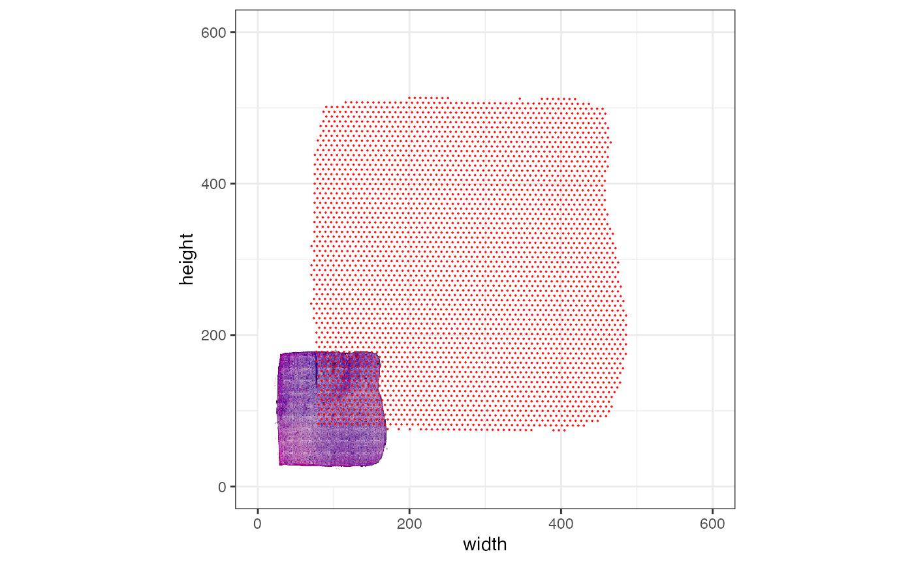
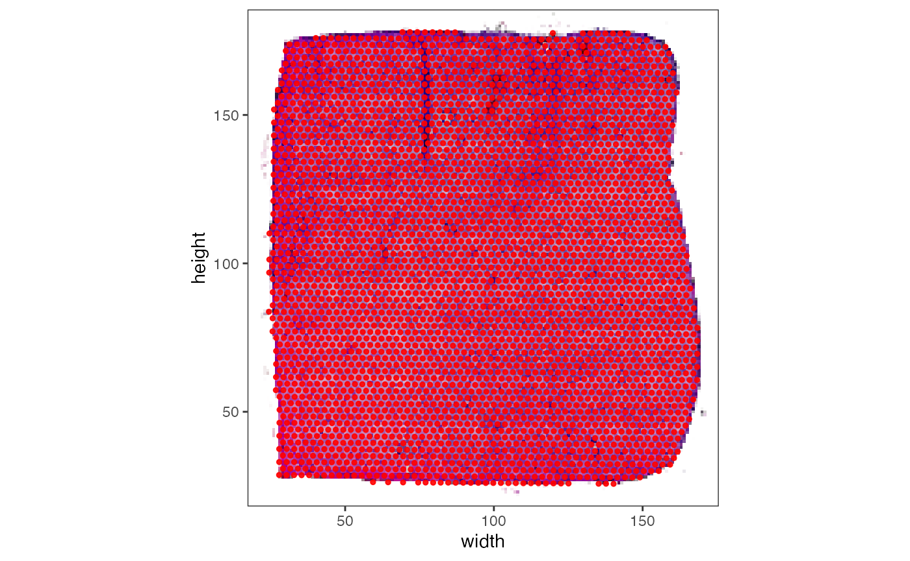

Initiation of individual SPATA2 objects
initiation-and-preprocessing-customized.Rmd1. Introduction
While SPATA2 provides functions to initiate SPATA2
objects with standardized output from common platforms like Visium or MERFISH, you can
initiate a SPATA2 object from scratch with individual data as long as
your data meets the following criteria:
- There must be a clearly identified and quantifiable unit of data like gene- or protein expression, metabolite counts.
- There must be a clearly identified observational unit to which the data is mapped like barcoded spots, single cells or beads.
- There must be numeric information about the position of each observation in 2D space in form of x- and y- coordinates.
Everything else is optional. This tutorial guides you through the required steps and best practices.
2. Initiate the object
The function to use is initiateSpataObject(). Minimal
requirements to actually create a SPATA2 object
include:
- Input for
sample_name: A character value which names your object. - Input for
modality: A character value which best describes the molecular modality you have data for. Read more here. - Input for
count_mtr: A numeric m x n matrix with rownames corresponding to molecule names and column names corresponding to the identifiers of your observations, in SPATA2 terms: the barcodes. - Input for
coords_df: A data.frame with at least three variables. barcodes, x or x_orig and y or y_orig.
2.1 With minimal requirements
This code chunks creates a SPATA2 object from scratch
with minimal requirements.
## use SPATA2 intern example data
data("example_data")
count_mtr <- example_data$count_mtr
coords_df <- example_data$coords_df
# show count mtr structure
count_mtr[1:5, 1:5]## 5 x 5 sparse Matrix of class "dgCMatrix"
## AAACAAGTATCTCCCA-1 AAACACCAATAACTGC-1 AAACAGAGCGACTCCT-1
## MT1X 1 2 3
## ADM . 1 1
## IGKC . . .
## VEGFA 1 . .
## DDIT3 1 1 1
## AAACAGCTTTCAGAAG-1 AAACAGGGTCTATATT-1
## MT1X 2 3
## ADM . .
## IGKC . .
## VEGFA . 1
## DDIT3 1 .
# show coords data.frame structure
coords_df## # A tibble: 3,733 × 3
## barcodes x_orig y_orig
## <chr> <dbl> <dbl>
## 1 AAACAAGTATCTCCCA-1 435. 226.
## 2 AAACACCAATAACTGC-1 132. 171.
## 3 AAACAGAGCGACTCCT-1 407. 455.
## 4 AAACAGCTTTCAGAAG-1 96 273
## 5 AAACAGGGTCTATATT-1 110. 247.
## 6 AAACAGTGTTCCTGGG-1 219. 81.8
## 7 AAACATTTCCCGGATT-1 416. 157.
## 8 AAACCGGGTAGGTACC-1 165. 279.
## 9 AAACCGTTCGTCCAGG-1 216. 215.
## 10 AAACCTAAGCAGCCGG-1 365. 132.
## # ℹ 3,723 more rows
object_minimal <-
initiateSpataObject(
sample_name = "my_object", # req. a
modality = "gene", # req. b
count_mtr = count_mtr, # req. c
coords_df = coords_df # req. d
)
# left plot
plotSurface(object_minimal)
# right plot
plotSurface(object_minimal, color_by = "METRN")
2.2 Including images
You can either register images after creating the object or do it
during the initiation. Whether you have it in your global environment or
whether you read it from a directory, the image should be compatible
with the EBImage
package - which is the case for almost all images. If you use
img_dir the directory of the image is stored, too, so you
can conveniently switch between images if you have registered
multiple.
2.2.1 Aligned images
# get an image from the example data (or read in your own)
img_normres <- example_data$img_normres
dim(img_normres)## [1] 576 600 3
# initiate the object with an image
object_init_with_img <-
initiateSpataObject(
sample_name = "my_object",
modality = "gene",
count_mtr = count_mtr,
coords_df = coords_df,
img = img_normres, # provide the image
img_name = "norm_res" # name the image
)
# register the image afterwards
object_minimal <-
registerImage(
object = object_minimal, # object from previous code chunk
img = img_normres,
img_name = "norm_res",
unload = FALSE
)
# both result in the same output
# left plot
plotSurface(object_init_with_img, display_image = T)
# right plot
plotSurface(object_minimal, display_image = T)  

2.2.2 Not-aligned images
What if your image is not aligned with the coordinates of your
observations which are stored in the coords_df? There are
two kinds of problems that could arise.
Bad Scaling
One problem could be that the x- and y-coordinates of
coords_df are scaled to a different resolution than the
image. In the example below, the SPATA2 object is initiated
with an image that is smaller in dimensions compared to the scaling of
the coordinates of the observations.
# an image
img_lowres <- example_data$img_lowres
class(img_lowres)
## [1] "Image"
## attr(,"package")
## [1] "EBImage"
# dimensions lowres image
dim(img_lowres)
## [1] 200 208 3
# dimensions coordinates
coords_df <- getCoordsDf(object_minimal)
# maxima of x- and y-coordinates surpass their respective image axes
map(.x = coords_df[,c("x", "y")], .f = range)
## $x
## [1] 70.32 485.76
##
## $y
## [1] 74.16 513.24
object_badly_scaled <-
initiateSpataObject(
sample_name = "my_object",
modality = "gene",
count_mtr = count_mtr,
coords_df = coords_df,
img = img_lowres,
img_name = "lowres"
)
# the plotted observations -> bad alignment
# left plot (axes range is scaled to observation range by default)
plotSurface(object_badly_scaled, pt_clr = "red", display_image = T) +
theme_bw()
# right plot with increased axes scale
plotSurface(object_badly_scaled, pt_clr = "red", display_image = T, xrange = c(0, 600), yrange = c(0, 600)) +
theme_bw()
In this case a scale factor is needed.
# compute an image scale factor (or obtain it otherwise)
isf <- max(dim(img_lowres)) / max(dim(img_normres))
print(isf)
## [1] 0.3466667
object_well_scaled <-
initiateSpataObject(
sample_name = "my_object",
modality = "gene",
count_mtr = count_mtr,
coords_df = coords_df,
img = img_lowres,
img_name = "lowres",
scale_factors = list(image = isf) # provide the scale factor!
)
# the image scale factor is used to scale the coordinates to the image that
# is currently active, which is the image 'lowres' since object_well_scaled contains
# only that
plotSurface(object_well_scaled, pt_clr = "red", display_image = T) +
theme_bw()
Bad justification
If the image needs additional justification in terms horizontal or vertical translation, rotation or stretching, please refer to the vignette on image handling.
# for some image adjustments
library(EBImage)
# mess up the image justification
img_bad_just <-
flip(example_data$img_normres) %>%
rotate(angle = 47, bg.col = "white") %>%
translate(v = c(20, 55), bg.col = "white")
# initiate the SPATA2 object with it
object_bad_just <-
initiateSpataObject(
sample_name = "my_object",
modality = "gene",
count_mtr = count_mtr,
coords_df = coords_df,
img = img_bad_just,
img_name = "bad_just"
)
plotSurface(object_bad_just, pt_clr = "red", display_image = T)
3. SI units and the pixel scale factor
In SPATA2, the pixel scale factor is used to transform the coordinates from pixel (or loose numeric values) to SI units. It is a numeric value that comes with an attribute which indicates the SI unit to which the pixel- or the loose numeric value - is scaled (e.g. mm / px). It is applied after the coordinates have been scaled to the image resolution.
Note, that the name pixel scale factor has evolved historically, since SPATA2 was developed with the Visium platform in mind. The term does not fit perfectly for platforms such as MERFISH or Xenium experiments since they do not provide an image and the coordinates are provided in SI units (despite being dealt with as simple numeric values in R). A more fitting name would be loose-numeric-value-to-SI-factor - that’s quite long, though. Furthermore, the SI unit system of SPATA2 works stable and we don’t want to touch it. Therefore, the name pixel scale factor remains.
# we computed that beforehand...
psf <- 0.01368328
attr(psf, which = "unit") <- "mm/px"
if(FALSE){
# this is the scale factor MERFISH and Xenium objects are inititated with
# since the coordinates already come in um units
psf <- 1
attr(psf, which = "unit") <- "um/px"
}
# usage of the pixel scale factor translated:
# multiply the x- and y-coordinates with this factor to obtain
# x- and y-coordinates in mm scale
print(psf)
## [1] 0.01368328
## attr(,"unit")
## [1] "mm/px"
object_advanced <-
initiateSpataObject(
sample_name = "my_object",
modality = "gene",
count_mtr = count_mtr,
coords_df = coords_df,
img = img_normres, # provide the image
img_name = "norm_res", # name the image
scale_factors = list(pixel = psf) # the pixel scale factor for image norm_res
)
# object_advanced has been created with a pixel scale factor
containsScaleFactor(object_advanced, fct_name = "pixel")
## [1] TRUE
# object_minimal has not (!) been created with a pixel scale factor
containsScaleFactor(object_minimal, fct_name = "pixel")
## [1] FALSE
# note how the factor works for all kinds of units
getPixelScaleFactor(object_advanced, unit = "um")
## [1] 13.68328
## attr(,"unit")
## [1] "um/px"The pixel scale factor must not necessarily be provided. The function
computePixelScaleFactor() can compute it if a certain
criteria is met. Namely that there is a fixed center-to-center distance
inherent to the method or platform that underlies the data set, as is
the case for the Visium platform. For that, we need the
SpatialMethod class.
4. The spatial method
So far we have created SPATA2 objects without giving any
thought to the spatial method underlying the data. However, the spatial
method or platform based on which the data was created often contains
specifics that are important and useful for some functions. SPATA2
stores information around that in an S4 object of class
SpatialMethod. In case of
initiateSpataObject() which does not read data from a
predefined platform but with individual data the argument
spatial_method defaults to ‘Undefined’. The
SpatialMethod class provides information about the
experiment set up and tells certain functions whether it is valid to use
them with your data set or not.
# show overview
object_minimal## An object of class SPATA2
## Sample: my_object
## Size: 3733 x 2000 (undefined observations x molecules)
## Memory: 84.15 Mb
## Platform: Undefined
## Molecular assays (1):
## 1. Assay
## Molecular modality: gene
## Distinct molecules: 2000
## Matrices (1):
## -counts (active)
## Registered images (1):
## - norm_res (576x600 px, active, loaded)
## Meta variables (1): sample4.1 The concept
You can read more about this class with SpatialMethod.
Every platform known to SPATA2 has such a SpatialMethod
object defined. Consider the object for the Visium platform with the
6.5mm x 6.5mm capture area, in SPATA2 referred to as
VisiumSmall.
# show the class
class(VisiumSmall)## [1] "SpatialMethod"
## attr(,"package")
## [1] "SPATA2"
# show the slot names
slotNames(VisiumSmall)## [1] "info" "method_specifics" "name"
## [4] "unit" "observational_unit" "version"
# show the content of each slot as a list
show(VisiumSmall)## An object of class 'SpatialMethod'.
# contrast this with the spatial method with which
# undefined SPATA2 objects are created by default
show(spatial_methods$Undefined)## An object of class 'SpatialMethod'.Depending on the content of this object, in particular the slot @method_specifics, certain functions in SPATA2
work with you data and certain functions do not. For instance, if
information about the center-to-center distance in slot
@method_specifics$ccd is missing the function
computePixelScaleFactor() does not work, since it needs the
center-to-center distance.
4.2 Create it yourself
To create a valid SpatialMethod object, you need only
three aspects: the observational unit, the name of the method and the
default unit. Everything else is optional.
sp_method <-
createSpatialMethod(
observational_unit = "spot",
name = "MyPlatform",
unit = "mm",
method_specifics = list("ccd" = "100um") # optional
)
# create a SPATA2 object with a defined spatial method
object_advanced <-
initiateSpataObject(
sample_name = "my_object",
modality = "gene",
count_mtr = count_mtr,
coords_df = coords_df,
img = img_normres,
img_name = "norm_res",
spatial_method = sp_method
)
# the platform appears in the overview
show(object_advanced)## An object of class SPATA2
## Sample: my_object
## Size: 3733 x 2000 (spots x molecules)
## Memory: 84.21 Mb
## Platform: MyPlatform
## Molecular assays (1):
## 1. Assay
## Molecular modality: gene
## Distinct molecules: 2000
## Matrices (1):
## -counts (active)
## Registered images (1):
## - norm_res (576x600 px, active, loaded)
## Meta variables (1): sample
# the SPATA2 object contains information about the spatial method underlying its data
# which qualifies it for automatic computation of the pixel scale factor
containsCCD(object_advanced)## [1] TRUE
object_advanced <- computePixelScaleFactor(object_advanced)
# looks familiar?
getPixelScaleFactor(object_advanced, unit = "mm")## [1] 0.01368328
## attr(,"unit")
## [1] "mm/px"